Part 1: Training a Single-Step Denoising UNet
This project began by implementing a simple one-step denoiser. Given a noisy image z, the objective was to train a denoiser Dθ such that it maps z to a clean image x. This was accomplished by optimizing over an L2 loss:
L = 𝔼z,x‖Dθ(z) − x‖² ... (B.1)
1.1 Implementing the UNet
The denoiser was implemented as a UNet architecture, consisting of downsampling and upsampling blocks with skip connections. The UNet employs standard tensor operations including convolutional layers (Conv2d), batch normalization (BatchNorm2d), GELU activation functions, transposed convolutions (ConvTranspose2d), and average pooling (AvgPool2d).

Figure 1: Unconditional UNet Architecture
The architecture includes the following key components:
- Conv: A convolutional layer that maintains image resolution while modifying channel dimensions
- DownConv: A convolutional layer that downsamples the tensor by a factor of 2
- UpConv: A convolutional layer that upsamples the tensor by a factor of 2
- Flatten: An average pooling layer that flattens a 7×7 tensor into a 1×1 tensor
- Unflatten: A convolutional layer that unflattens a 1×1 tensor into a 7×7 tensor
- Concat: Channel-wise concatenation between tensors with the same 2D shape
The hyperparameter D represents the number of hidden channels and was set to optimize network performance.
1.2 Using the UNet to Train a Denoiser
The training objective involved solving the denoising problem where a noisy image z is mapped to a clean image x by optimizing the L2 loss function shown above.
To generate training data pairs (z, x), where each x is a clean MNIST digit, the following noising process was applied:
z = x + σε, where ε ~ N(0, I) ... (B.2)
1.2.1 Visualization of Noise Levels
The noising process was first visualized across different noise levels σ = [0.0, 0.2, 0.4, 0.5, 0.6, 0.8, 1.0] on normalized images where x ∈ [0, 1]. As expected, images became progressively noisier as σ increased.
Visualization of MNIST digits at noise levels σ = 0.0, 0.2, 0.4, 0.5, 0.6, 0.8, 1.0]
|
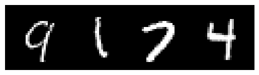
σ = 0.0 |
|
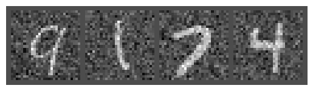
σ = 0.2 |
|
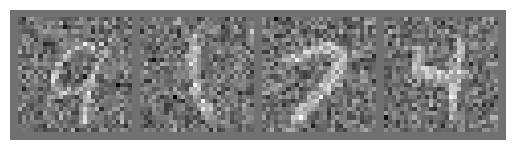
σ = 0.4 |
|
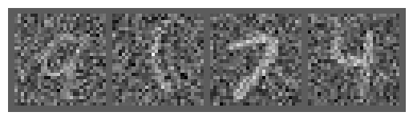
σ = 0.5 |
|
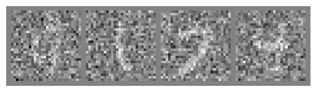
σ = 0.6 |
|
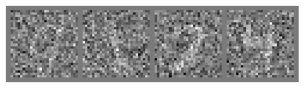
σ = 0.8 |
|
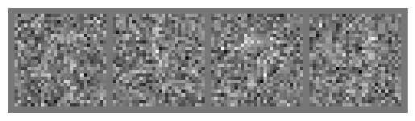
σ = 1.0 |
1.2.2 Training the Denoiser
The model was trained with the following specifications:
- Objective: Train a denoiser to denoise noisy images z with σ = 0.5 applied to clean images x
- Dataset: MNIST training set with batch size of 256, shuffled before dataloader creation
- Model: UNet architecture with hidden dimension D = 128
- Optimizer: Adam optimizer with learning rate of 1e-4
- Training Duration: 5 epochs
Images were noised dynamically when fetched from the dataloader, ensuring the network encountered new noised images in every epoch due to random ε, thereby improving generalization.
Training loss curve
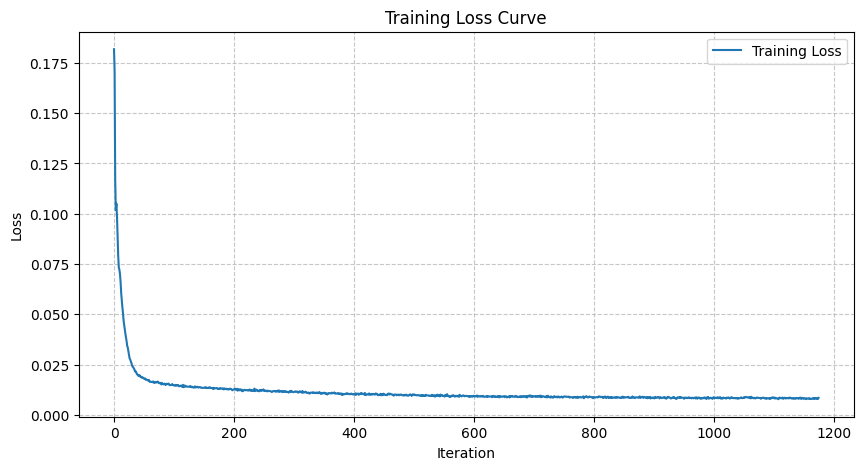Denoising results after epoch 1
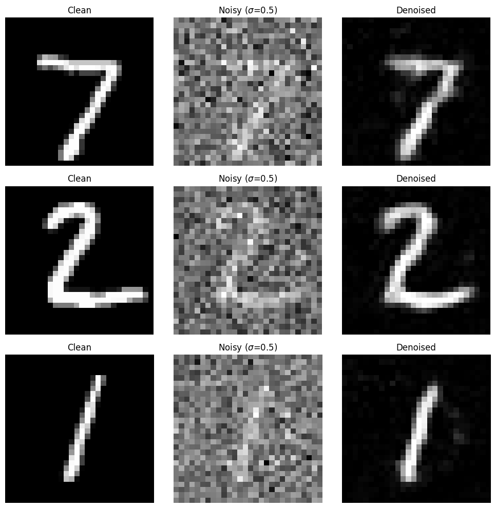Denoising results after epoch 5
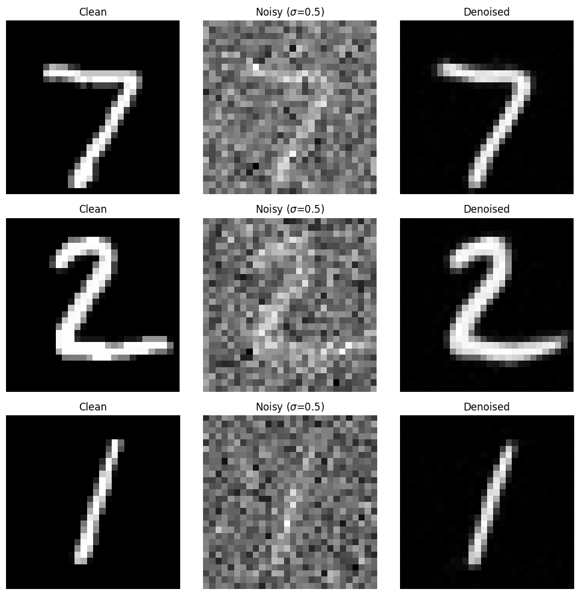After 5 epochs of training (approximately 3 minutes on a Colab T4 GPU), the denoiser achieved reasonable performance on the test set, producing legible digits from noisy inputs at σ = 0.5.
1.2.2 Out-of-Distribution Testing
To evaluate the robustness of the denoiser, it was tested on noise levels it had not been trained for. The model, trained exclusively on σ = 0.5, was evaluated on test set digits with varying noise levels σ = [0.0, 0.2, 0.4, 0.5, 0.6, 0.8, 1.0].
Out-of-distribution test results
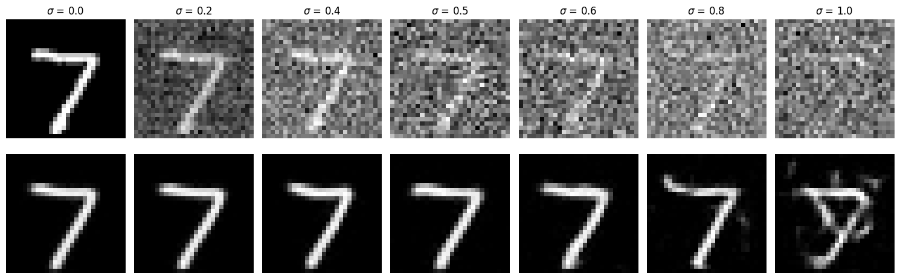This experiment revealed the generalization capabilities and limitations of the trained denoiser when applied to noise levels outside its training distribution.
1.2.3 Denoising Pure Noise
To transform denoising into a generative task, the model was tested on its ability to denoise pure, random Gaussian noise. This can be conceptualized as starting with a blank canvas z = ε where ε ~ N(0, I) and denoising it to produce a clean image x.
A new denoiser was trained using the same process as section 1.2.1, but with pure noise ε ~ N(0, I) as input instead of noised images. The model was trained for 5 epochs.
Training loss curve for pure noise denoising

Pure noise denoising results after epoch 1
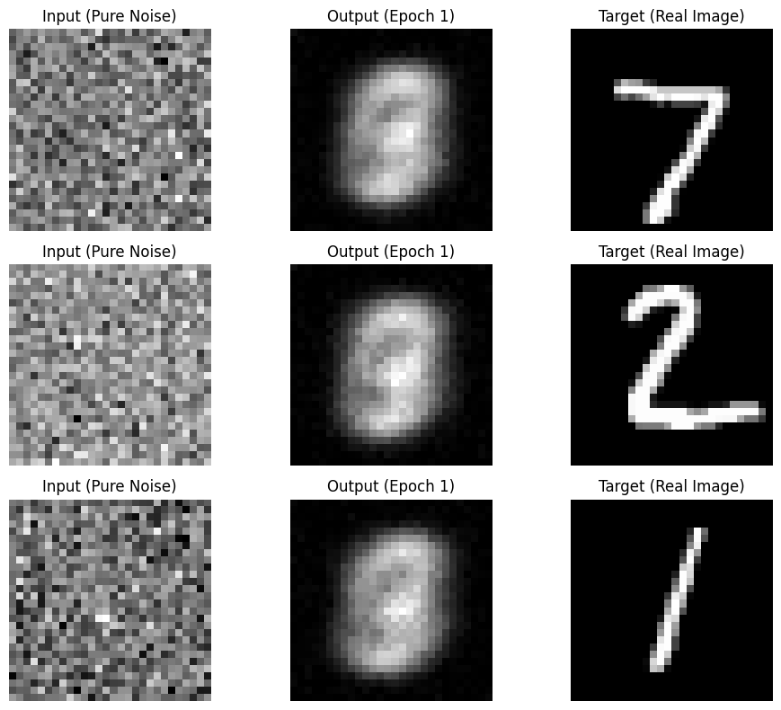Pure noise denoising results after epoch 5
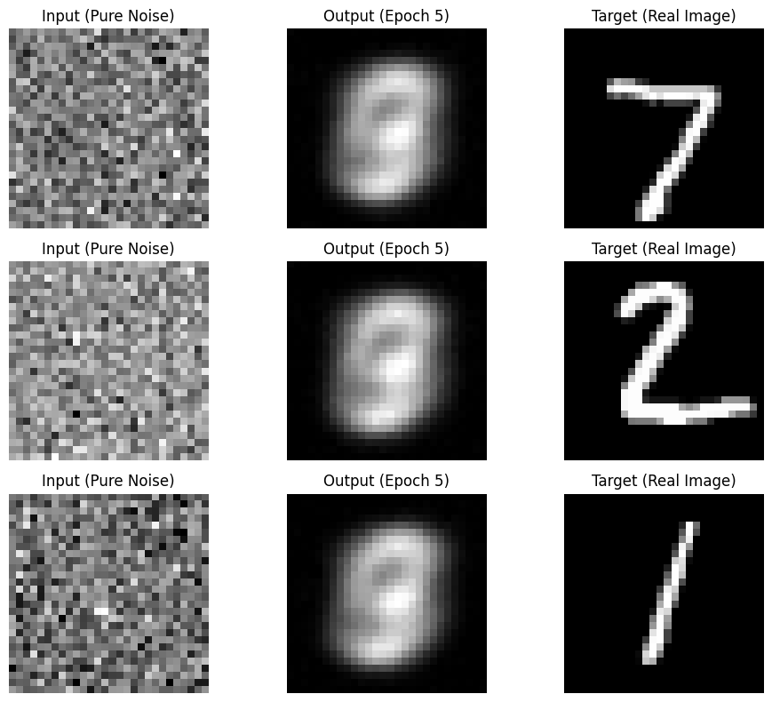Analysis of Generated Outputs
Analysis of patterns observed
After 1 and 5 epochs, generated outputs look really similar. They appear to form something that resembles a 3 or an 8, but much more faded or 'smudged' across the center region of the image. This makes sense because the model learns to predict the "point" that minimizes the sum of squared distances to all training examples. What we are seeing here is something that could be thought of as the centroid of the MNIST data set; a ghostly number that consists of the most common strokes across all the digits in the dataset.
Part 2: Training a Flow Matching Model
The results from Part 1 demonstrated that one-step denoising does not perform well for generative tasks. Instead, iterative denoising is required, which was implemented using flow matching. This approach trains a UNet model to predict the 'flow' from noisy data to clean data.
In the flow matching setup, a pure noise image x₀ ~ 𝒩(0, I) is sampled and progressively refined to generate a realistic image x₁. The intermediate noisy samples are constructed through linear interpolation between noisy x₀ and clean x₁:
xt = (1 − t)x₀ + tx₁ where x₀ ~ 𝒩(0, 1), t ∈ [0, 1] ... (B.3)
This defines a vector field describing the position of a point xt at time t relative to the clean data distribution p₁(x₁) and the noisy data distribution p₀(x₀). For small t, the image remains close to noise, while for larger t, it approaches the clean distribution.
The flow can be conceptualized as the velocity (change in position with respect to time) of this vector field, describing the movement from x₀ to x₁:
u(xt, t) = dxt/dt = x₁ − x₀ ... (B.4)
The learning objective was to train a UNet uθ(xt, t) to approximate this flow:
L = 𝔼x₀~p₀(x₀), x₁~p₁(x₁), t~U[0,1]‖(x₁ − x₀) − uθ(xt, t)‖² ... (B.5)
2.1 Adding Time Conditioning to UNet
To condition the UNet on the scalar timestep t, a time conditioning mechanism was implemented. The conditioning signal was injected into the UNet using FCBlock (fully-connected block) operations.

Figure 2: Time-Conditioned UNet Architecture
Note: While the figure shows x₀ as output, the network actually predicts the flow from noisy x₀ to clean x₁, which contains both components of the original image and the noise to remove.

Figure 3: FCBlock for Conditioning
The FCBlock uses linear layers (nn.Linear) to embed the conditioning signal. Since t is a scalar, the input feature dimension F_in was set to 1. The time embedding was implemented as follows:
- Two FCBlocks (fc1_t and fc2_t) were created to process the normalized timestep t ∈ [0, 1]
- The embedding t1 = fc1_t(t) modulates the unflatten operation: unflatten = unflatten * t1
- The embedding t2 = fc2_t(t) modulates the up1 operation: up1 = up1 * t2
2.2 Training the UNet
Training the time-conditioned UNet uθ(xt, t) followed a straightforward procedure. For each training iteration, a random image x₁ was selected from the training set, a random timestep t was sampled, noise was added to x₁ to obtain xt, and the denoiser was trained to predict the flow at xt.

Algorithm B.1: Training Time-Conditioned UNet
The training specifications were as follows:
- Objective: Train a time-conditioned UNet to predict the flow at xt given a noisy image and timestep
- Dataset: MNIST training set with batch size of 64, shuffled before dataloader creation
- Model: Time-conditioned UNet with hidden dimension D = 64
- Optimizer: Adam optimizer with initial learning rate of 1e-2 and exponential learning rate decay scheduler with gamma = 0.1^(1.0/num_epochs)
- Training Duration: Multiple epochs until convergence
Training loss curve for time-conditioned UNet
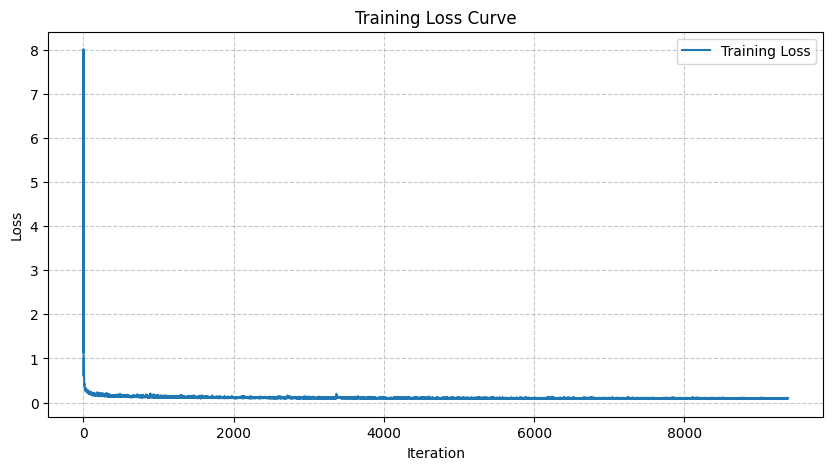2.3 Sampling from the UNet
Once trained, the UNet was used for iterative denoising following Algorithm B.2. While the results were not perfect, legible digits emerged from the iterative denoising process.

Algorithm B.2: Sampling from Time-Conditioned UNet
Sampling results after epoch 1
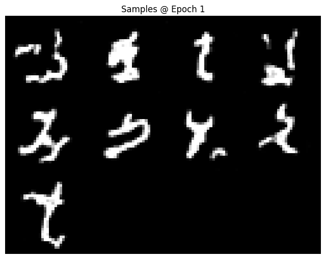Sampling results after epoch 5
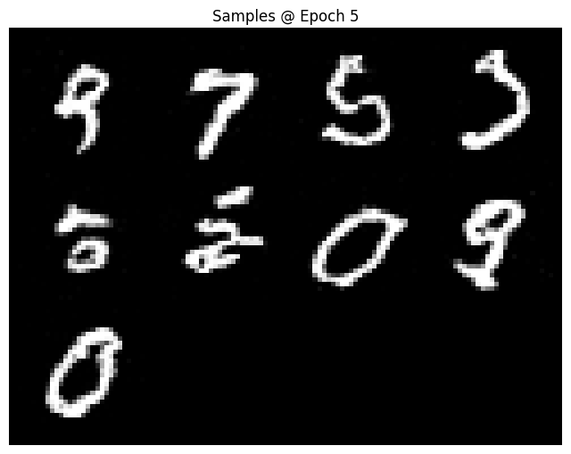Sampling results after epoch 10
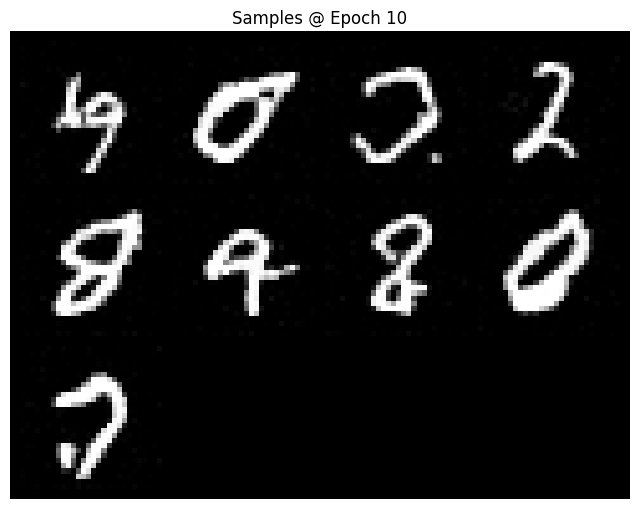The sampling results demonstrated progressive improvement across epochs, with digits becoming more recognizable and well-formed as training progressed.
2.4 Adding Class-Conditioning to UNet
To improve results and provide greater control over image generation, the UNet was extended to optionally condition on the digit class (0-9). This required adding two additional FCBlocks to the architecture.
For the class-conditioning vector c, a one-hot encoding was used instead of a single scalar. To maintain the ability to perform unconditional generation (as required for classifier-free guidance), dropout was implemented where 10% of the time (puncond = 0.1), the class conditioning vector c was dropped by setting it to zero.
The conditioning was implemented as follows:
- Four FCBlocks were created: fc1_t, fc1_c, fc2_t, and fc2_c
- Time and class embeddings were computed: t1 = fc1_t(t), c1 = fc1_c(c), t2 = fc2_t(t), c2 = fc2_c(c)
- The embeddings modulated the network: unflatten = c1 * unflatten + t1, up1 = c2 * up1 + t2
2.5 Training the Class-Conditioned UNet
Training for the class-conditioned model followed the same procedure as the time-only conditioning, with the addition of the conditioning vector c and periodic unconditional generation.

Algorithm B.3: Training Class-Conditioned UNet
Training loss curve for class-conditioned UNet
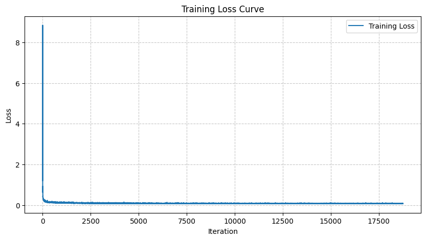2.6 Sampling from the Class-Conditioned UNet
Sampling from the class-conditioned UNet utilized classifier-free guidance with γ = 5.0 to improve generation quality.

Algorithm B.4: Sampling from Class-Conditioned UNet
Class-conditioned sampling results after epoch 1
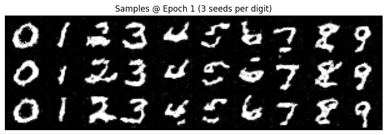Class-conditioned sampling results after epoch 5
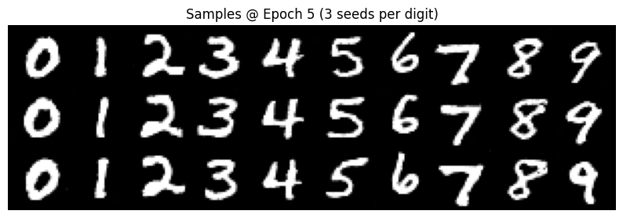Class-conditioned sampling results after epoch 10
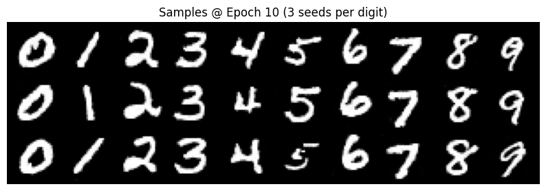Class-conditioned sampling results after epoch 15
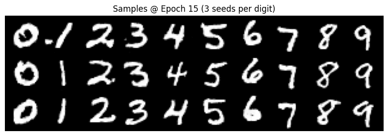Class-conditioned sampling results after epoch 20
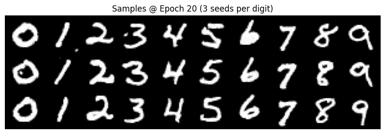Class-conditioning enabled faster convergence, requiring only 10 epochs of training compared to the time-only model. The results demonstrated controlled generation of specific digit classes with high quality.
Removing the Learning Rate Scheduler
We were able to get rid of the learning rate scheduler by fixing it to initial learning rate 20% less than what it was before. Even though the learning rate is now fixed and smaller, this was compensated for by an increase in training epochs to 20 (although the results after 10 epochs are already comparable to outputs with the scheduler).
Conclusion
This project successfully demonstrated the implementation and training of flow matching models for generative tasks. Starting with a simple single-step denoiser that proved insufficient for high-quality generation, the work progressed to implementing iterative denoising through flow matching.
The key findings include:
- Single-step denoisers can effectively remove noise at specific trained levels but struggle to generate novel images from pure noise, tending to produce average representations of the training distribution
- Flow matching with time-conditioning enables iterative refinement from noise to clean images, producing recognizable but imperfect digit generations
- Adding class-conditioning with classifier-free guidance significantly improves generation quality and convergence speed, enabling controlled generation of specific digit classes
- The learning rate scheduling strategy plays an important role in training stability and convergence, though simpler alternatives may be viable
The progression from unconditional single-step denoising to conditional iterative generation via flow matching illustrates fundamental concepts in modern generative modeling, including the importance of iterative refinement, conditional generation, and guidance techniques for improving sample quality.
Personal reflections
This was an amazing project! I learned a lot about the inner-workings of models that for some time now in my research I had only understood as a magic black-box with inputs and outputs. My key takeaways are that conditioning can be as simplea as a multiplication in the network, that CFG is super intuitive (literally translate the noise in the direction of you want!), and that Flow Matching sort-of reminds me of NeRFs in how we're learning a field rather than directly the values themselves.
We've seen that FM and Diffusion can be used to generativeley generate data in distribution; however, in my own research I'm most interestd in how we can use these techniques to generate motion. As a related learning exercise, I wonder if there is a simple motion data set (I'm thinking like a 2D point moving around a simple obstacles) that I can use to train either model to generate novel motion paths around said simple obstacles. I will leave this to future (post-finals hehe) work.
Acknowledgements
This project was developed based on assignments created by Ryan Tabrizi, Daniel Geng, Hang Gao, and Jingfeng Yang, advised by Liyue Shen, Andrew Owens, Angjoo Kanazawa, and Alexei Efros. They give special thanks to David McAllister and Songwei Ge for their helpful feedback and suggestions.
Implementation utilized PyTorch and the MNIST dataset from torchvision. Training was conducted using GPU resources from Google Colab.